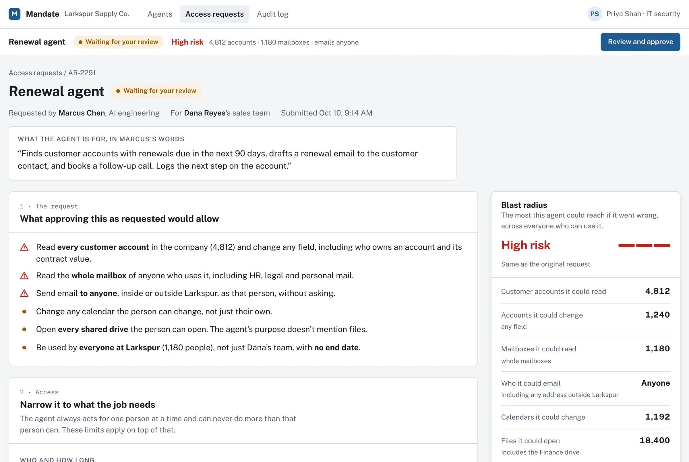
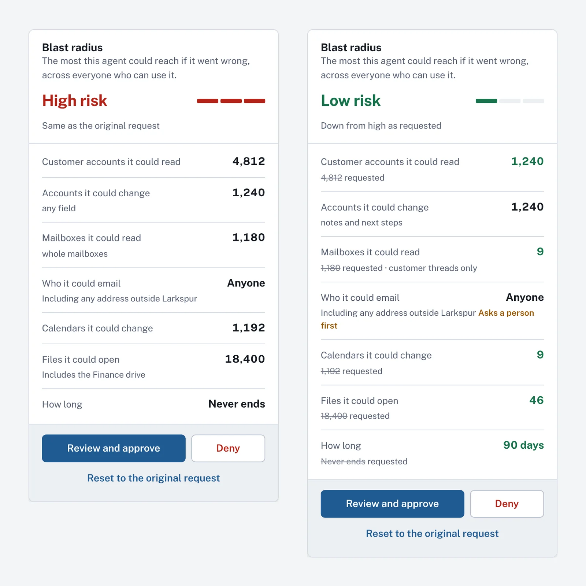
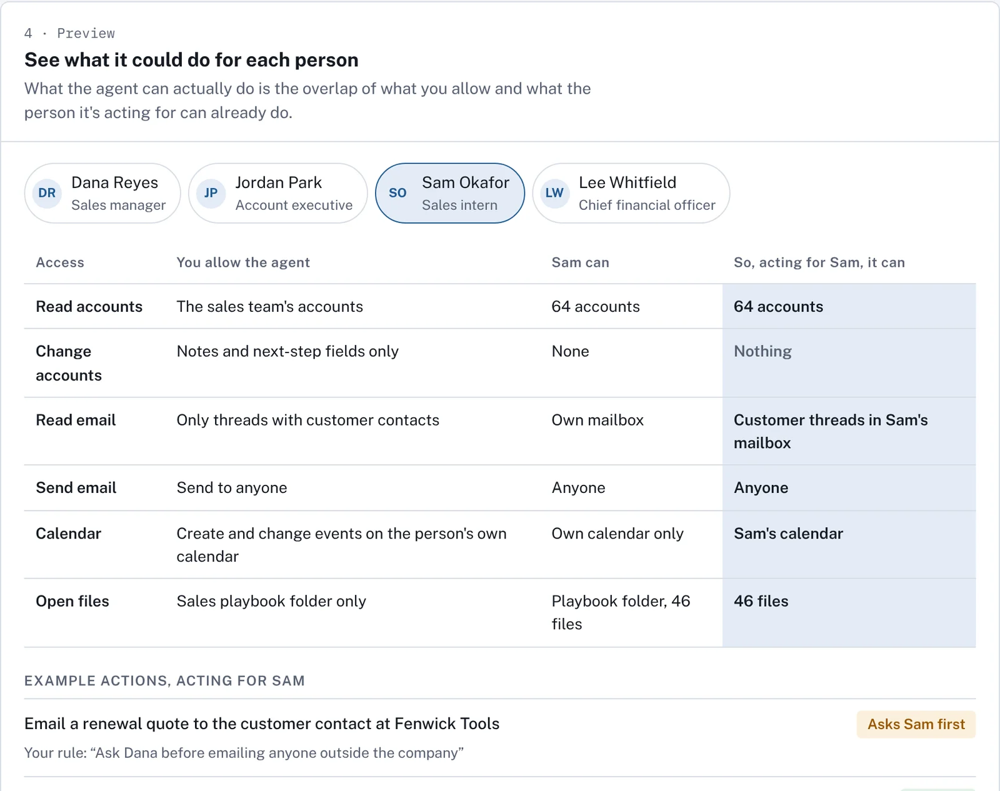

Case study · Concept project
How much could this agent reach? Reviewing an AI agent's access request
- Role
- Designer and builder, with Claude writing most of the code
- Built with
- HTML, CSS and JavaScript, with made-up data
- Status
- Working prototype; usability testing is next
- Try it
- Live prototype
Summary
Companies are starting to give AI agents access to email, customer records, calendars and files, and those agents act on behalf of people. Someone in IT or security has to approve that access. Today they usually see a list of technical scopes, like mail.send or crm.accounts.write, and have to work out for themselves what those add up to.
I designed and built a prototype for that moment. An admin reviews an agent's access request and gets answers to three questions before approving: What could this agent actually reach? For whom? And when should it stop and ask a person?

Why this problem
My UiPath work was about the person working alongside an agent: showing its steps, saying how sure it is, making the hand-off clear. This project is the other side of that. Before an agent can act for anyone, someone decides what it's allowed to do, and that person has very little to go on.
It's also an old question in a new form. In my research on home IoT security at Carnegie Mellon, each device declared the few places it was allowed to connect, and everything else was blocked. Agents need the same thing: access limited to the job, chosen by someone who can see what they're granting.
The scenario
Everything in the prototype is made up: the company, the product and the people.
- Marcus, an AI engineer, built a Renewal agent for the sales team. It finds renewals due, drafts emails to customers, books follow-up calls and logs next steps. He asked for broad access: every customer account, whole mailboxes, sending to anyone, every shared drive, for everyone in the company, with no end date.
- Priya, in IT security, has to decide what to grant. She's the main user of the prototype.
- Dana, a sales manager, is one of the people the agent will act for.
Key decisions
1. Show reach in numbers, not scopes.
The "blast radius" panel shows the most the agent could reach if it went wrong, across everyone who can use it: 4,812 customer accounts, 1,180 mailboxes, anyone outside the company. It updates as Priya narrows each setting, and it keeps the requested value next to the new one so she can see what each change bought.
Tradeoff: numbers can be wrong or go stale, and a single risk label hides detail. I kept the label for a quick read and put the counts directly under it, so the label never stands alone.

2. The agent can never do more than the person it's acting for.
An agent acting for Dana should only reach what Dana herself can reach. What it can really do is the overlap of what the admin allows and what that person already has. The preview lets Priya switch between people and see that overlap, with example actions marked allowed, needs approval, or not allowed, and why.
Tradeoff: this is more to explain than one list of permissions. But a single list can't show that the same agent reaches 1,240 accounts for a manager and 64 for an intern, and that difference is what an admin needs to see.

3. Show how the AI read the rule, and test it, before saving.
Priya writes guardrails in plain words, like "Ask Dana before emailing anyone outside the company." AI turns that into a structured rule. Instead of hiding that step, the prototype shows how the rule was understood, as When / Then / If no answer. It names any assumption it made and runs example actions through the rule before she adds it.
Tradeoff: an extra step before saving. A rule that's quietly misread is worse than no rule, because the admin believes she's protected.

4. Make "ask a person first" part of the policy.
In my UiPath work, the agent stopped and asked the person at runtime. Here the admin decides ahead of time which actions need a person's approval, who approves, and what happens if nobody answers. The approval summary sent back to Marcus lists every change from his request and every guardrail, so the decision can be explained later.
Tradeoff: each approval slows the agent down. The rules are narrow by default, so a customer email asks first and an email to a teammate doesn't.
What building it surfaced
Writing the rule checker turned up a question I hadn't planned for. A rule that names Dana really means "the person the agent is acting for," because the same rule applies to everyone who uses the agent. So when the agent acts for Sam, the intern, Sam approves the agent's emails to customers. That might be right, or approval might belong to the person's manager. It's the first question I'll take into testing.
How AI shaped this work
I kept a log of where AI helped and where it didn't.
- Choosing the project. Asked for ideas against the job posting alone, AI recommended a runtime approval flow. When I asked it to check my portfolio first, it found that idea mostly repeated my UiPath case study, and pointed to the gaps instead: an admin persona, permission scoping, and policy. The lesson: AI ranks ideas against whatever you give it, so give it your own work too.
- Reading the request closely. While exploring ways to recommend fixes, AI noticed that Marcus's own purpose says the agent drafts renewal emails. It may not need to send email at all.
- Building. Claude wrote most of the code from my direction. Testing in a real browser caught bugs that reading the code didn't, like a hidden overlay that blocked every click.
- The rule checker. In the prototype it's scripted, not a live model, so the behavior can be tested reliably. The design question is the same either way: how to show an admin what the AI understood.
What's next
- Usability testing with three to five people who work in IT, security or technical administration. The tasks: approve the agent for its job and nothing more, make sure it asks before emailing customers, and answer "could this agent read the CEO's email, and how do you know?" I'll measure task success, errors, time, and how confident each person is about what they granted.
- Recommendations. A one-click "fit to purpose" that proposes the smallest access the stated job needs, with each change previewed and undoable on its own. Also suggestions to guard risky access with a rule instead of removing it.
- Remembered defaults. If Priya always changes sending email to drafts only, the product should notice, offer to make it her default, and mark every pre-applied choice. The risk to design against: pre-filled choices can make an admin stop looking.